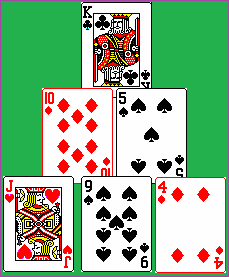

|

This game of pyramid solitaire is played by removing cards in pairs (or in the case of Kings, singly) that total 13. Cards may be selected from the card pyramid or the up card on the side. Only cards that are not covered in the card pyramid can be used. A new card is flipped on top of the up card pile from the deck remainder if no card pairs equal 13. The game is over once the card deck is depleted and no more card pairs can be matched to equal 13 or if all cards have been used (paired up to equal 13). Each card removed in a pair equaling 13 (or each King) is worth one point in scoring. If all cards are removed from the card pyramid or all cards are used in the up card pile, 4 points are added to the score. A winning game is worth 60 points maximum. |
Combinations are as follows (any suit):
More information on pyramid solitaire may be found via wikipedia at: Pyramid Solitaire
Options:
The game allows for the option of showing all of the cards in the pyramid (face up) or hiding them (face down). If
the option is set to hide cards (face down) in the pyramid, if the game is lost, the face down cards in the pyramid are
then displayed.
There is an option to show a 'can play' hint that will display a hint label if cards can be played. The label is
not displayed even if cards can be played if the option is off. In addition, the image used for the card back can
be selected from a list of images. The maximum score gotten reached in any game is kept automatically along with
the window position.
The 'Flip (reset) Stock Pile' option will flip over the used stock pile when used up and will keep flipping
it till no more cards can be played (matched to pyramid cards). The default for this option is unchecked (off).
The 'can play' and flip options will take effect immediately during game play if selected or unselected. The
other options take effect when the next new game is started.